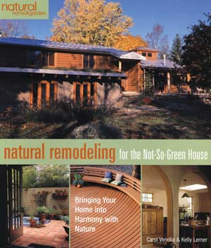

This delightful new book by architects Carol Venolia and Kelly Lerner describes ways to “bring your home into harmony with nature,” and is a gold mine of information for anyone seeking to remodel an existing house.
Perhaps you are thinking of starting from scratch rather than remodeling? The authors provide compelling reasons for working with an existing building instead: You will incur lower costs and enjoy the benefits of an existing neighborhood and infrastructure. You’ll also avoid disturbing natural vegetation and drainage patterns, and using undeveloped land, materials and resources.
The book is a beautifully organized visual treat. Every page is well-designed. There are abundant photographs and diagrams, every one thoughtfully chosen. Each of the five sections follows a clear pattern: thoughtful discussion of the topic, specifics on the project’s goals, valuable data and insights, personal experiences of the authors, and detailed case studies to further illustrate the benefits experienced by actual homeowners. These case studies are interwoven throughout the book to reinforce how the concept of natural design can fit into a wide range of remodeling projects. There are actions that you can take right away, followed by more advanced steps, and finally longer-term measures. The references and lists of resources are comprehensive and well researched - they alone make the book worth buying.
The book is exceedingly well written, building on the considerable background and experiences of Venolia and Lerner. “Just as a seed needs fertile soil, sunshine and water to grow, your remodeling process needs a starting point that’s rich in information so that it can take root and thrive.”
You can read an excerpt from the book in Forget AC! Cool Your Home Naturally, August/September 2007.
|
 ONE WORLD DESIGN Natural Remodeling for the Not-So-Green House, by Carol Venolia and Kelly Lerner |
|
|